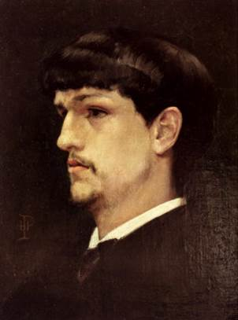

<a-assets>
  <a-mixin
    id="mallet"
    geometry="primitive: cylinder; height: 0.3; radius: 0.005;"
    material="color: #fff; opacity: 0.5"
    position="0 0 0.1"
    detachable
  >
  </a-mixin>

  <a-mixin
    id="mallet-head"
    position="0 -0.15 0"
    geometry="primitive: sphere; radius: 0.02"
    material="color: white; opacity: 0.9"
    collider="static: false; layer: 1"
    shape="type:sphere; radius:0.02"
  >
  </a-mixin>

  <a-asset-item id="rightPaw" src="/models/paw.gltf"></a-asset-item>
  <a-asset-item id="leftPaw" src="/models/leftpaw.gltf"></a-asset-item>
  <a-asset-item id="tromboneModel" src="/models/trombone.gltf"></a-asset-item>
  <a-asset-item
    id="tromboneSlideModel"
    src="/models/trombone_slide.gltf"
  ></a-asset-item>

  

  
  
  
  
  
  
  
  
  
</a-assets>
